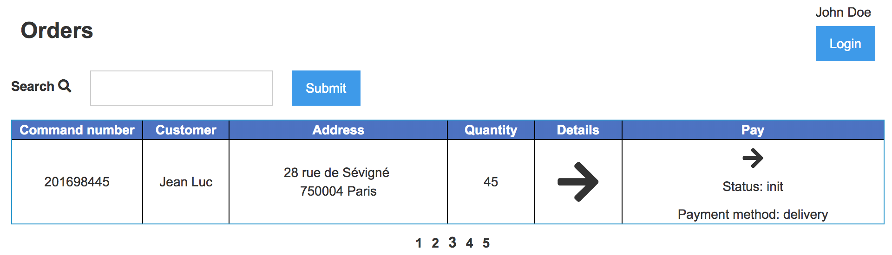

<style>
.markdown-body {
  box-sizing: border-box;
  min-width: 200px;
  max-width: 980px;
margin: 0 auto;
padding: 45px;
}

@media (max-width: 767px) {
  .markdown-body {
padding: 15px;
  }
}
</style>
<article class="markdown-body">
<!DOCTYPE html>
<html>
<head>
  <title>chap5/README.md</title>
  <link rel="stylesheet" href="../.github-markdown-css/github-markdown.css">
</head>
<body>
<h1>
<a id="user-content-chapter-5---react-and-remote-props" class="anchor" href="#chapter-5---react-and-remote-props" aria-hidden="true"><span aria-hidden="true" class="octicon octicon-link"></span></a>Chapter 5 - React and Remote props</h1>
<p>In this chapter, we will put our web app on a server with <strong>Elixir</strong>. We will
modify the architecture of our <strong>React</strong> application to be able to load
data from the server, <strong>without</strong> reloading all the pages (asynchronous call).</p>
<p>This chapter is one of the hardest to understand, as it forces you to create a Web App as we do it in KBRW. There are other ways, but experience taught us this architecture.</p>
<p><em>If you have any question, please ask in the #formation channel.</em></p>
<h2>
<a id="user-content-step-0---put-the-react-front-on-the-server" class="anchor" href="#step-0---put-the-react-front-on-the-server" aria-hidden="true"><span aria-hidden="true" class="octicon octicon-link"></span></a>Step 0 - Put the React front on the server.</h2>
<p>Remember <a href="chap2.html"><strong>Chapter 2</strong></a> ? Well we're gonna use our <code>Plug.Router</code> again :)</p>
<p>Until now, to test if our front was working, we were loading the <code>index.html</code> file in <code>./priv/static</code>.<br>
We will change that, and tell our router where to go fetch it.</p>
<p>First, we need to use a macro that will return our files in <code>/priv/static</code> on a
<strong>URL</strong>.<br>
For that, we will use the <a href="https://hexdocs.pm/plug/Plug.Static.html" rel="nofollow"><strong><code>Plug.Static</code></strong></a> module.</p>
<p><em>As always, go read some of the documentation :)</em></p>
<div class="highlight highlight-source-elixir"><pre>plug <span class="pl-en">Plug</span>.<span class="pl-en">Static</span>, <span class="pl-c1">from:</span> <span class="pl-s"><span class="pl-pds">"</span>priv/static<span class="pl-pds">"</span></span>, <span class="pl-c1">at:</span> <span class="pl-s"><span class="pl-pds">"</span>/static<span class="pl-pds">"</span></span></pre></div>
<p>Then, we need to return our <code>index.html</code> on calls that don't match a correct route.</p>
<div class="highlight highlight-source-elixir"><pre>get _, <span class="pl-c1">do:</span> send_file(conn, <span class="pl-c1">200</span>, <span class="pl-s"><span class="pl-pds">"</span>priv/static/index.html<span class="pl-pds">"</span></span>)</pre></div>
<p><em>That way, when the user will not interact with our <strong>REST api</strong>, he will be directed to our front page.</em></p>
<p>Finally, we need to change the paths to js scripts and css in <code>index.html</code> to correspond to the path in our server (<code>/static/styles.css</code> for instance).</p>
<p>Let's launch our project and go to the root url:
<a href="http://localhost:4001" rel="nofollow">localhost:4001</a></p>
<hr>
<p><a href="img/orders_page.png" target="_blank" rel="noopener noreferrer"></a></p>
<hr>
<h2>
<a id="user-content-step-1-understand-the-architecture" class="anchor" href="#step-1-understand-the-architecture" aria-hidden="true"><span aria-hidden="true" class="octicon octicon-link"></span></a>Step 1: Understand the architecture</h2>
<p>The objective of this part is to be able to render the <strong>HTML</strong> items depending on the route of the page, without having to reload the page and retreive information from an API, to load dynamically the information.</p>
<p>Do not forget that all our JS is executed <strong>Client side</strong>, this means that this code lives inside your client browser.<br>
For now only the API is server side.</p>
<p><em><strong>All our Elixir code is Server side, the rest is Client Side.</strong></em></p>
<p><a href="./img/simplified_remote_props.png" target="_blank" rel="noopener noreferrer"></a></p>
<ul>
<li>We're gonna listen to url change events, and when it occurs verify that the new route exists. For that we're gonna create a <code>routes</code> object, containing the list of available routes and various details about them (properties, data).</li>
<li>Using our <code>route</code> data, we verify that all the needed data (<code>remoteProps</code>) are downloaded form the API.
<ul>
<li>If not we download them using our <code>remoteProps</code> object</li>
<li>Then we add them to the <code>props</code>, <a href="https://reactjs.org/docs/components-and-props.html" rel="nofollow">the inner state of our React components.</a>
</li>
</ul>
</li>
<li>Finally, we display all the elements needed by the requested <code>route</code>
</li>
</ul>
<h2>
<a id="user-content-step-2---write-the-front-architecture" class="anchor" href="#step-2---write-the-front-architecture" aria-hidden="true"><span aria-hidden="true" class="octicon octicon-link"></span></a>Step 2 - Write the front architecture</h2>
<h3>
<a id="user-content-dependencies" class="anchor" href="#dependencies" aria-hidden="true"><span aria-hidden="true" class="octicon octicon-link"></span></a>Dependencies</h3>
<p>We're gonna have to add some new dependencies, to help us parse <a href="https://en.wikipedia.org/wiki/Query_string" rel="nofollow">Query Parameters</a>, Cookies, etc.</p>
<div class="highlight highlight-source-js"><pre>    <span class="pl-s"><span class="pl-pds">"</span>when<span class="pl-pds">"</span></span><span class="pl-k">:</span> <span class="pl-s"><span class="pl-pds">"</span>^3.7.8<span class="pl-pds">"</span></span>,
    <span class="pl-s"><span class="pl-pds">"</span>xhr2<span class="pl-pds">"</span></span><span class="pl-k">:</span> <span class="pl-s"><span class="pl-pds">"</span>^0.1.4<span class="pl-pds">"</span></span>,
    <span class="pl-s"><span class="pl-pds">"</span>cookie<span class="pl-pds">"</span></span><span class="pl-k">:</span> <span class="pl-s"><span class="pl-pds">"</span>~0.1.2<span class="pl-pds">"</span></span>,
    <span class="pl-s"><span class="pl-pds">"</span>qs<span class="pl-pds">"</span></span><span class="pl-k">:</span> <span class="pl-s"><span class="pl-pds">"</span>~2.3.3<span class="pl-pds">"</span></span>,</pre></div>
<h3>
<a id="user-content-event-listener" class="anchor" href="#event-listener" aria-hidden="true"><span aria-hidden="true" class="octicon octicon-link"></span></a>Event Listener</h3>
<p>Let's create our <code>onPathChange</code> function and add an event listener to it.<br>
You can see more about the <code>popstate</code> event <a href="https://developer.mozilla.org/fr/docs/Web/Events/popstate" rel="nofollow">here</a>.</p>
<div class="highlight highlight-source-js"><pre><span class="pl-k">function</span> <span class="pl-en">onPathChange</span>() {
  <span class="pl-smi">ReactDOM</span>.<span class="pl-en">render</span>(<span class="pl-k">&lt;</span>Page <span class="pl-k">/</span><span class="pl-k">&gt;</span>, <span class="pl-c1">document</span>.<span class="pl-c1">getElementById</span>(<span class="pl-s"><span class="pl-pds">'</span>root<span class="pl-pds">'</span></span>));
}

<span class="pl-c1">window</span>.<span class="pl-c1">addEventListener</span>(<span class="pl-s"><span class="pl-pds">"</span>popstate<span class="pl-pds">"</span></span>, ()<span class="pl-k">=&gt;</span>{ <span class="pl-en">onPathChange</span>() })
<span class="pl-en">onPathChange</span>()</pre></div>
<h3>
<a id="user-content-parse-our-requested-route" class="anchor" href="#parse-our-requested-route" aria-hidden="true"><span aria-hidden="true" class="octicon octicon-link"></span></a>Parse our requested route</h3>
<p>Now let's get the property of our new page (path, query string and cookie).</p>
<p>Don't forget to import query string and cookie JS library:</p>
<div class="highlight highlight-source-js"><pre><span class="pl-k">var</span> Qs <span class="pl-k">=</span> <span class="pl-c1">require</span>(<span class="pl-s"><span class="pl-pds">'</span>qs<span class="pl-pds">'</span></span>)
<span class="pl-k">var</span> Cookie <span class="pl-k">=</span> <span class="pl-c1">require</span>(<span class="pl-s"><span class="pl-pds">'</span>cookie<span class="pl-pds">'</span></span>)</pre></div>
<p>And then modify your <code>onPathChange</code> function.<br>
Here we're gonna retrieve the requested path and various parameters using the <a href="https://www.w3schools.com/jsref/obj_location.asp" rel="nofollow">location object</a>.</p>
<div class="highlight highlight-source-js"><pre><span class="pl-k">function</span> <span class="pl-en">onPathChange</span>() {
  <span class="pl-k">var</span> path <span class="pl-k">=</span> <span class="pl-smi">location</span>.<span class="pl-c1">pathname</span>
  <span class="pl-k">var</span> qs <span class="pl-k">=</span> <span class="pl-smi">Qs</span>.<span class="pl-c1">parse</span>(<span class="pl-smi">location</span>.<span class="pl-smi">search</span>.<span class="pl-c1">slice</span>(<span class="pl-c1">1</span>))
  <span class="pl-k">var</span> cookies <span class="pl-k">=</span> <span class="pl-smi">Cookie</span>.<span class="pl-c1">parse</span>(<span class="pl-c1">document</span>.<span class="pl-c1">cookie</span>)

  <span class="pl-smi">ReactDOM</span>.<span class="pl-en">render</span>(<span class="pl-k">&lt;</span>Page <span class="pl-k">/</span><span class="pl-k">&gt;</span>, <span class="pl-c1">document</span>.<span class="pl-c1">getElementById</span>(<span class="pl-s"><span class="pl-pds">'</span>root<span class="pl-pds">'</span></span>));
}</pre></div>
<p>Now we will declare a global variable that will describe the state of our browser.<br>
It will become the <a href="https://reactjs.org/docs/components-and-props.html" rel="nofollow">props</a> given to our <strong>React</strong> components.</p>
<div class="highlight highlight-source-js"><pre><span class="pl-k">var</span> browserState <span class="pl-k">=</span> {}

<span class="pl-k">function</span> <span class="pl-en">onPathChange</span>() {
  [<span class="pl-k">...</span>]
  <span class="pl-k">var</span> cookies <span class="pl-k">=</span> <span class="pl-smi">Cookie</span>.<span class="pl-c1">parse</span>(<span class="pl-c1">document</span>.<span class="pl-c1">cookie</span>)

  browserState <span class="pl-k">=</span> {
    <span class="pl-k">...</span>browserState, 
    path<span class="pl-k">:</span> path, 
    qs<span class="pl-k">:</span> qs, 
    cookie<span class="pl-k">:</span> cookies
  }
  [<span class="pl-k">...</span>]
}</pre></div>
<h3>
<a id="user-content-the-routes-object" class="anchor" href="#the-routes-object" aria-hidden="true"><span aria-hidden="true" class="octicon octicon-link"></span></a>The routes object</h3>
<p>Let's create a <code>routes</code> object. It's gonna tell us which React component you have to display depending on the requested route.</p>
<p><em>We will use the path <code>/</code> for the orders list page and <code>/order/&lt;order_id&gt;</code> for the order we want to know more about.</em></p>
<div class="highlight highlight-source-js"><pre><span class="pl-k">var</span> routes <span class="pl-k">=</span> {
  <span class="pl-s"><span class="pl-pds">"</span>orders<span class="pl-pds">"</span></span><span class="pl-k">:</span> {
    <span class="pl-en">path</span><span class="pl-k">:</span> (<span class="pl-smi">params</span>) <span class="pl-k">=&gt;</span> {
      <span class="pl-k">return</span> <span class="pl-s"><span class="pl-pds">"</span>/<span class="pl-pds">"</span></span>;
    },
    <span class="pl-en">match</span><span class="pl-k">:</span> (<span class="pl-smi">path</span>, <span class="pl-smi">qs</span>) <span class="pl-k">=&gt;</span> {
      <span class="pl-k">return</span> (path <span class="pl-k">==</span> <span class="pl-s"><span class="pl-pds">"</span>/<span class="pl-pds">"</span></span>) <span class="pl-k">&amp;&amp;</span> {handlerPath<span class="pl-k">:</span> [Layout, Header, Orders]}
    }
  }, 
  <span class="pl-s"><span class="pl-pds">"</span>order<span class="pl-pds">"</span></span><span class="pl-k">:</span> {
    <span class="pl-en">path</span><span class="pl-k">:</span> (<span class="pl-smi">params</span>) <span class="pl-k">=&gt;</span> {
      <span class="pl-k">return</span> <span class="pl-s"><span class="pl-pds">"</span>/order/<span class="pl-pds">"</span></span> <span class="pl-k">+</span> params;
    },
    <span class="pl-en">match</span><span class="pl-k">:</span> (<span class="pl-smi">path</span>, <span class="pl-smi">qs</span>) <span class="pl-k">=&gt;</span> {
      <span class="pl-k">var</span> r <span class="pl-k">=</span> <span class="pl-k">new</span> <span class="pl-en">RegExp</span>(<span class="pl-s"><span class="pl-pds">"</span>/order/([^/]*)$<span class="pl-pds">"</span></span>).<span class="pl-c1">exec</span>(path)
      <span class="pl-k">return</span> r <span class="pl-k">&amp;&amp;</span> {handlerPath<span class="pl-k">:</span> [Layout, Header, Order],  order_id<span class="pl-k">:</span> r[<span class="pl-c1">1</span>]}
    }
  }
}</pre></div>
<ul>
<li>The first part of our return try to match the path. If it's true we return an object containing data about the React components, and the props.</li>
<li>
<code>HandlerPath</code> contains the list of React components to render</li>
</ul>
<p>To use this, we need to define the <strong>React Classes</strong> <code>Layout</code> (here our layout is empty and will be build later), <code>Header</code> (The header of our website), <code>Orders</code> (the page with the orders list) and <code>Order</code> (the page with the order description).</p>
<h3>
<a id="user-content-render-our-components" class="anchor" href="#render-our-components" aria-hidden="true"><span aria-hidden="true" class="octicon octicon-link"></span></a>Render our components</h3>
<p>To render the components present inside <code>handlerPath</code>, we're gonna create a new React class named <strong>Child</strong> that will render the others recursively.</p>
<p><em>It is just gonna render the requested component with the rest of the list. This ChildHandler component is gonna have to do the same thing.</em></p>
<div class="highlight highlight-source-js"><pre><span class="pl-k">var</span> Child <span class="pl-k">=</span> <span class="pl-en">createReactClass</span>({
  <span class="pl-en">render</span>(){
    <span class="pl-k">var</span> [ChildHandler,<span class="pl-k">...</span>rest] <span class="pl-k">=</span> <span class="pl-c1">this</span>.<span class="pl-smi">props</span>.<span class="pl-smi">handlerPath</span>
    <span class="pl-k">return</span> <span class="pl-k">&lt;</span>ChildHandler {<span class="pl-k">...</span><span class="pl-c1">this</span>.<span class="pl-smi">props</span>} handlerPath<span class="pl-k">=</span>{rest} <span class="pl-k">/</span><span class="pl-k">&gt;</span>
  }
})</pre></div>
<p>With these new objects (<code>routes</code> and <code>Child</code>), we can now update our <code>onPathChange</code> function to print
the correct object depending on the route.</p>
<p><em>If you dont understand where we are going, go take another look at the diagram above</em></p>
<div class="highlight highlight-source-js"><pre><span class="pl-k">var</span> browserState <span class="pl-k">=</span> {Child<span class="pl-k">:</span> Child}

<span class="pl-k">function</span> <span class="pl-en">onPathChange</span>() {
  [<span class="pl-k">...</span>]
  browserState <span class="pl-k">=</span> {<span class="pl-k">...</span>}
  <span class="pl-k">var</span> route, routeProps
  <span class="pl-c"><span class="pl-c">//</span>We try to match the requested path to one our our routes</span>
  <span class="pl-k">for</span>(<span class="pl-k">var</span> key <span class="pl-k">in</span> routes) {
    routeProps <span class="pl-k">=</span> routes[key].<span class="pl-c1">match</span>(path, qs)
    <span class="pl-k">if</span>(routeProps){
        route <span class="pl-k">=</span> key
          <span class="pl-k">break</span>;
    }
  }
  browserState <span class="pl-k">=</span> {
    <span class="pl-k">...</span>browserState,
    <span class="pl-k">...</span>routeProps,
    route<span class="pl-k">:</span> route
  }
  <span class="pl-c"><span class="pl-c">//</span>If we don't have a match, we render an Error component</span>
  <span class="pl-k">if</span>(<span class="pl-k">!</span>route)
    <span class="pl-k">return</span> <span class="pl-smi">ReactDOM</span>.<span class="pl-en">render</span>(<span class="pl-k">&lt;</span>ErrorPage message<span class="pl-k">=</span>{<span class="pl-s"><span class="pl-pds">"</span>Not Found<span class="pl-pds">"</span></span>} code<span class="pl-k">=</span>{<span class="pl-c1">404</span>}<span class="pl-k">/</span><span class="pl-k">&gt;</span>, <span class="pl-c1">document</span>.<span class="pl-c1">getElementById</span>(<span class="pl-s"><span class="pl-pds">'</span>root<span class="pl-pds">'</span></span>))
  <span class="pl-smi">ReactDOM</span>.<span class="pl-en">render</span>(<span class="pl-k">&lt;</span>Child {<span class="pl-k">...</span>browserState}<span class="pl-k">/</span><span class="pl-k">&gt;</span>, <span class="pl-c1">document</span>.<span class="pl-c1">getElementById</span>(<span class="pl-s"><span class="pl-pds">'</span>root<span class="pl-pds">'</span></span>))
}</pre></div>
<p>At this point only your empty <code>Layout</code> component is printed.<br>
Indeed, the <code>Child</code> class only render the first class, you need to modify the other components to call <code>Child</code> on your child class list.</p>
<div class="highlight highlight-source-js"><pre><span class="pl-k">var</span> Layout <span class="pl-k">=</span> <span class="pl-en">createReactClass</span>({
<span class="pl-en">render</span>(){
  <span class="pl-k">return</span> <span class="pl-k">&lt;</span><span class="pl-c1">JSXZ</span> <span class="pl-k">in</span><span class="pl-k">=</span><span class="pl-s"><span class="pl-pds">"</span>orders<span class="pl-pds">"</span></span> sel<span class="pl-k">=</span><span class="pl-s"><span class="pl-pds">"</span>.layout<span class="pl-pds">"</span></span><span class="pl-k">&gt;</span>
      <span class="pl-k">&lt;</span><span class="pl-c1">Z</span> sel<span class="pl-k">=</span><span class="pl-s"><span class="pl-pds">"</span>.layout-container<span class="pl-pds">"</span></span><span class="pl-k">&gt;</span>
        <span class="pl-k">&lt;</span><span class="pl-c1">this</span>.<span class="pl-smi">props</span>.<span class="pl-smi">Child</span> {<span class="pl-k">...</span><span class="pl-c1">this</span>.<span class="pl-smi">props</span>}<span class="pl-k">/</span><span class="pl-k">&gt;</span>
      <span class="pl-k">&lt;</span><span class="pl-k">/</span><span class="pl-c1">Z</span><span class="pl-k">&gt;</span>
    <span class="pl-k">&lt;</span><span class="pl-k">/</span><span class="pl-c1">JSXZ</span><span class="pl-k">&gt;</span>
  }
})</pre></div>
<p>This is creating a tree of component <strong>with only one branch</strong>.<br>
It's gonna allow us to modify the props of our <code>Layout</code> and propagate them to the others really easily.</p>
<hr>
<p><strong>Exercice:</strong></p>
<p>Create the different <strong>React</strong> classes that will compose our application: <code>Header</code>, <code>Orders</code>, <code>Order</code>.<br>
Our layout will have a <code>.layout</code> CSS class, our header a <code>.header-container</code>, etc.<br>
As we want to have a <strong>one branch tree</strong>,  our Layout <code>div</code> will contain our header <code>div</code>, that will contain our container <code>div</code>. Modify your Webflow accordingly.</p>
<pre><code>  Layout
    |- Header
        |- Orders
</code></pre>
<hr>
<h2>
<a id="user-content-step-3-download-the-remoteprops-from-the-api" class="anchor" href="#step-3-download-the-remoteprops-from-the-api" aria-hidden="true"><span aria-hidden="true" class="octicon octicon-link"></span></a>Step 3: Download the remoteProps from the API</h2>
<p>Now that our front is structured, we want to download the information from our server API.</p>
<h3>
<a id="user-content-http-requests" class="anchor" href="#http-requests" aria-hidden="true"><span aria-hidden="true" class="octicon octicon-link"></span></a>HTTP requests</h3>
<p>If we want to fetch information from our API, we will need to make <strong>HTTP</strong> call to our <strong><code>Server.Router</code></strong>.<br>
So, we will add a <strong><code>HTTP</code></strong> module to send the requests.</p>
<div class="highlight highlight-source-js"><pre><span class="pl-k">var</span> <span class="pl-c1">XMLHttpRequest</span> <span class="pl-k">=</span> <span class="pl-c1">require</span>(<span class="pl-s"><span class="pl-pds">"</span>xhr2<span class="pl-pds">"</span></span>)
<span class="pl-k">var</span> <span class="pl-c1">HTTP</span> <span class="pl-k">=</span> <span class="pl-k">new</span> (<span class="pl-k">function</span>(){
  <span class="pl-c1">this</span>.<span class="pl-en">get</span> <span class="pl-k">=</span> (<span class="pl-smi">url</span>)<span class="pl-k">=&gt;</span><span class="pl-c1">this</span>.<span class="pl-en">req</span>(<span class="pl-s"><span class="pl-pds">'</span>GET<span class="pl-pds">'</span></span>,url)
  <span class="pl-c1">this</span>.<span class="pl-en">delete</span> <span class="pl-k">=</span> (<span class="pl-smi">url</span>)<span class="pl-k">=&gt;</span><span class="pl-c1">this</span>.<span class="pl-en">req</span>(<span class="pl-s"><span class="pl-pds">'</span>DELETE<span class="pl-pds">'</span></span>,url)
  <span class="pl-c1">this</span>.<span class="pl-en">post</span> <span class="pl-k">=</span> (<span class="pl-smi">url</span>,<span class="pl-smi">data</span>)<span class="pl-k">=&gt;</span><span class="pl-c1">this</span>.<span class="pl-en">req</span>(<span class="pl-s"><span class="pl-pds">'</span>POST<span class="pl-pds">'</span></span>,url,data)
  <span class="pl-c1">this</span>.<span class="pl-en">put</span> <span class="pl-k">=</span> (<span class="pl-smi">url</span>,<span class="pl-smi">data</span>)<span class="pl-k">=&gt;</span><span class="pl-c1">this</span>.<span class="pl-en">req</span>(<span class="pl-s"><span class="pl-pds">'</span>PUT<span class="pl-pds">'</span></span>,url,data)

  <span class="pl-c1">this</span>.<span class="pl-en">req</span> <span class="pl-k">=</span> (<span class="pl-smi">method</span>,<span class="pl-smi">url</span>,<span class="pl-smi">data</span>)<span class="pl-k">=&gt;</span> <span class="pl-k">new</span> <span class="pl-en">Promise</span>((<span class="pl-smi">resolve</span>, <span class="pl-smi">reject</span>) <span class="pl-k">=&gt;</span> {
    <span class="pl-k">var</span> req <span class="pl-k">=</span> <span class="pl-k">new</span> <span class="pl-en">XMLHttpRequest</span>()
    <span class="pl-smi">req</span>.<span class="pl-c1">open</span>(method, url)
    <span class="pl-smi">req</span>.<span class="pl-smi">responseType</span> <span class="pl-k">=</span> <span class="pl-s"><span class="pl-pds">"</span>text<span class="pl-pds">"</span></span>
    <span class="pl-smi">req</span>.<span class="pl-c1">setRequestHeader</span>(<span class="pl-s"><span class="pl-pds">"</span>accept<span class="pl-pds">"</span></span>,<span class="pl-s"><span class="pl-pds">"</span>application/json,*/*;0.8<span class="pl-pds">"</span></span>)
    <span class="pl-smi">req</span>.<span class="pl-c1">setRequestHeader</span>(<span class="pl-s"><span class="pl-pds">"</span>content-type<span class="pl-pds">"</span></span>,<span class="pl-s"><span class="pl-pds">"</span>application/json<span class="pl-pds">"</span></span>)
    <span class="pl-smi">req</span>.<span class="pl-en">onload</span> <span class="pl-k">=</span> ()<span class="pl-k">=&gt;</span>{
      <span class="pl-k">if</span>(<span class="pl-smi">req</span>.<span class="pl-c1">status</span> <span class="pl-k">&gt;=</span> <span class="pl-c1">200</span> <span class="pl-k">&amp;&amp;</span> <span class="pl-smi">req</span>.<span class="pl-c1">status</span> <span class="pl-k">&lt;</span> <span class="pl-c1">300</span>){
      <span class="pl-en">resolve</span>(<span class="pl-smi">req</span>.<span class="pl-c1">responseText</span> <span class="pl-k">&amp;&amp;</span> <span class="pl-c1">JSON</span>.<span class="pl-c1">parse</span>(<span class="pl-smi">req</span>.<span class="pl-c1">responseText</span>))
      }<span class="pl-k">else</span>{
      <span class="pl-en">reject</span>({http_code<span class="pl-k">:</span> <span class="pl-smi">req</span>.<span class="pl-c1">status</span>})
      }
    }
  <span class="pl-smi">req</span>.<span class="pl-en">onerror</span> <span class="pl-k">=</span> (<span class="pl-smi">err</span>)<span class="pl-k">=&gt;</span>{
    <span class="pl-en">reject</span>({http_code<span class="pl-k">:</span> <span class="pl-smi">req</span>.<span class="pl-c1">status</span>})
  }
  <span class="pl-smi">req</span>.<span class="pl-c1">send</span>(data <span class="pl-k">&amp;&amp;</span> <span class="pl-c1">JSON</span>.<span class="pl-c1">stringify</span>(data))
  })
})()</pre></div>
<p>Take some time to understand this code. If you don't know what a <code>Promise</code> is, take a look at this article my Mozilla: <a href="https://developer.mozilla.org/fr/docs/Web/JavaScript/Guide/Utiliser_les_promesses" rel="nofollow">here</a>.</p>
<h3>
<a id="user-content-our-remoteprops-object" class="anchor" href="#our-remoteprops-object" aria-hidden="true"><span aria-hidden="true" class="octicon octicon-link"></span></a>Our remoteProps object</h3>
<p>Let's create the <code>remoteProps</code> object that will contains the URL of the API to request to obtain the data (prop), as well as the name of this prop.</p>
<div class="highlight highlight-source-js"><pre><span class="pl-k">var</span> remoteProps <span class="pl-k">=</span> {
  <span class="pl-en">user</span><span class="pl-k">:</span> (<span class="pl-smi">props</span>)<span class="pl-k">=&gt;</span>{
    <span class="pl-k">return</span> {
      url<span class="pl-k">:</span> <span class="pl-s"><span class="pl-pds">"</span>/api/me<span class="pl-pds">"</span></span>,
      prop<span class="pl-k">:</span> <span class="pl-s"><span class="pl-pds">"</span>user<span class="pl-pds">"</span></span>
    }
  },
  <span class="pl-en">orders</span><span class="pl-k">:</span> (<span class="pl-smi">props</span>)<span class="pl-k">=&gt;</span>{
    <span class="pl-k">if</span>(<span class="pl-k">!</span><span class="pl-smi">props</span>.<span class="pl-smi">user</span>)
      <span class="pl-k">return</span>
    <span class="pl-k">var</span> qs <span class="pl-k">=</span> {<span class="pl-k">...</span><span class="pl-smi">props</span>.<span class="pl-smi">qs</span>, user_id<span class="pl-k">:</span> <span class="pl-smi">props</span>.<span class="pl-smi">user</span>.<span class="pl-c1">value</span>.<span class="pl-c1">id</span>}
    <span class="pl-k">var</span> query <span class="pl-k">=</span> <span class="pl-smi">Qs</span>.<span class="pl-c1">stringify</span>(qs)
    <span class="pl-k">return</span> {
      url<span class="pl-k">:</span> <span class="pl-s"><span class="pl-pds">"</span>/api/orders<span class="pl-pds">"</span></span> <span class="pl-k">+</span> (query <span class="pl-k">==</span> <span class="pl-s"><span class="pl-pds">'</span><span class="pl-pds">'</span></span> <span class="pl-k">?</span> <span class="pl-s"><span class="pl-pds">'</span><span class="pl-pds">'</span></span> <span class="pl-k">:</span> <span class="pl-s"><span class="pl-pds">'</span>?<span class="pl-pds">'</span></span> <span class="pl-k">+</span> query),
      prop<span class="pl-k">:</span> <span class="pl-s"><span class="pl-pds">"</span>orders<span class="pl-pds">"</span></span>
    }
  },
  <span class="pl-en">order</span><span class="pl-k">:</span> (<span class="pl-smi">props</span>)<span class="pl-k">=&gt;</span>{
    <span class="pl-k">return</span> {
      url<span class="pl-k">:</span> <span class="pl-s"><span class="pl-pds">"</span>/api/order/<span class="pl-pds">"</span></span> <span class="pl-k">+</span> <span class="pl-smi">props</span>.<span class="pl-smi">order_id</span>,
      prop<span class="pl-k">:</span> <span class="pl-s"><span class="pl-pds">"</span>order<span class="pl-pds">"</span></span>
    }
  }
}</pre></div>
<ul>
<li>
<code>orders</code> links to the API call to get the list of orders in our <strong>ETS database</strong>
</li>
<li>order will return a <strong>JSON</strong> containing 1 item for the order description page.</li>
<li>I added here the <code>user</code> prop. This prop represent an authentication props. This is just here to expose <strong>the mechanism of dependencies</strong> between props
<ul>
<li><em>Here the <code>orders</code> props depends on the <code>user</code> props.</em></li>
</ul>
</li>
</ul>
<p><em>You can comment the code relative to the user props if need be</em></p>
<p>Let's add the corresponding remoteProps to our <strong>React Classes</strong> as a <a href="https://stackoverflow.com/questions/29433130/react-statics-with-es6-classes" rel="nofollow">static property</a>.</p>
<div class="highlight highlight-source-js"><pre><span class="pl-k">var</span> Orders <span class="pl-k">=</span> <span class="pl-en">createReactClass</span>({
  statics<span class="pl-k">:</span> {
    remoteProps<span class="pl-k">:</span> [<span class="pl-smi">remoteProps</span>.<span class="pl-smi">orders</span>]
  },
  [<span class="pl-k">...</span>]
}</pre></div>
<p>The original props of our <strong>React</strong> classes are based on the variable <code>browserState</code>, we will download in it the value required from the API, based on our remote props.<br>
For that we will create a function <code>addRemoteProps</code>. This function will take as parameters the <code>browserState</code> (our <code>props</code>) and modify it to add the result of the API.<br>
The <code>API endpoints</code> to request can be accessed at <code>browserState.handlerPath[i].remoteProps[j]</code></p>
<p>Our function will be asynchronous, so we will use <a href="https://developer.mozilla.org/fr/docs/Web/JavaScript/Reference/Objets_globaux/Promise" rel="nofollow">Promise</a>.</p>
<hr>
<div class="highlight highlight-source-js"><pre><span class="pl-k">function</span> <span class="pl-en">addRemoteProps</span>(<span class="pl-smi">props</span>){
  <span class="pl-k">return</span> <span class="pl-k">new</span> <span class="pl-en">Promise</span>((<span class="pl-smi">resolve</span>, <span class="pl-smi">reject</span>)<span class="pl-k">=&gt;</span>{</pre></div>
<p><em>As our function call for nework data, we need to create a <code>Promise</code> that will resolve when all the
API call will resolve</em></p>
<hr>
<div class="highlight highlight-source-js"><pre>    <span class="pl-c"><span class="pl-c">//</span>Here we could call `[].concat.apply` instead of `Array.prototype.concat.apply`</span>
    <span class="pl-c"><span class="pl-c">//</span>apply first parameter define the `this` of the concat function called</span>
    <span class="pl-c"><span class="pl-c">//</span>Ex [0,1,2].concat([3,4],[5,6])-&gt; [0,1,2,3,4,5,6]</span>
    <span class="pl-c"><span class="pl-c">//</span> &lt;=&gt; Array.prototype.concat.apply([0,1,2],[[3,4],[5,6]])</span>
    <span class="pl-c"><span class="pl-c">//</span>Also `var list = [1,2,3]` &lt;=&gt; `var list = new Array(1,2,3)`</span>
    <span class="pl-k">var</span> remoteProps <span class="pl-k">=</span> <span class="pl-c1">Array</span>.<span class="pl-c1">prototype</span>.<span class="pl-smi">concat</span>.<span class="pl-c1">apply</span>([],
      <span class="pl-smi">props</span>.<span class="pl-smi">handlerPath</span>
        .<span class="pl-en">map</span>((<span class="pl-smi">c</span>)<span class="pl-k">=&gt;</span> <span class="pl-smi">c</span>.<span class="pl-smi">remoteProps</span>) <span class="pl-c"><span class="pl-c">//</span> -&gt; [[remoteProps.user], [remoteProps.orders], null]</span>
        .<span class="pl-en">filter</span>((<span class="pl-smi">p</span>)<span class="pl-k">=&gt;</span> p) <span class="pl-c"><span class="pl-c">//</span> -&gt; [[remoteProps.user], [remoteProps.orders]]</span>
    )</pre></div>
<p><em>Here we extract from the <code>browserState</code> the <code>remoteProps</code> function that return the url and the
<code>prop name</code>.</em></p>
<hr>
<div class="highlight highlight-source-js"><pre>    <span class="pl-k">var</span> remoteProps <span class="pl-k">=</span> remoteProps
      .<span class="pl-en">map</span>((<span class="pl-smi">spec_fun</span>)<span class="pl-k">=&gt;</span> <span class="pl-en">spec_fun</span>(props) ) <span class="pl-c"><span class="pl-c">//</span> -&gt; 1st call [{url: '/api/me', prop: 'user'}, undefined]</span>
                                <span class="pl-c"><span class="pl-c">//</span> -&gt; 2nd call [{url: '/api/me', prop: 'user'}, {url: '/api/orders?user_id=123', prop: 'orders'}]</span>
      .<span class="pl-en">filter</span>((<span class="pl-smi">specs</span>)<span class="pl-k">=&gt;</span> specs) <span class="pl-c"><span class="pl-c">//</span> get rid of undefined from remoteProps that don't match their dependencies</span>
      .<span class="pl-en">filter</span>((<span class="pl-smi">specs</span>)<span class="pl-k">=&gt;</span> <span class="pl-k">!</span>props[<span class="pl-smi">specs</span>.<span class="pl-smi">prop</span>] <span class="pl-k">||</span>  props[<span class="pl-smi">specs</span>.<span class="pl-smi">prop</span>].<span class="pl-smi">url</span> <span class="pl-k">!=</span> <span class="pl-smi">specs</span>.<span class="pl-smi">url</span>) <span class="pl-c"><span class="pl-c">//</span> get rid of remoteProps already resolved with the url</span>
    <span class="pl-k">if</span>(<span class="pl-smi">remoteProps</span>.<span class="pl-c1">length</span> <span class="pl-k">==</span> <span class="pl-c1">0</span>)
      <span class="pl-k">return</span> <span class="pl-en">resolve</span>(props)</pre></div>
<p><em>On the code above, we execute the <code>remoteProps</code> functions and if it return a not correct object (<code>undefined</code>) or if the <code>props</code> has already been resolved with the same URL, then we remove these
object from the list.<br>
This behavior can be used to implement dependencies in the <code>remoteProps</code> as we will see later with the <code>/me/api</code> route</em></p>
<p><strong>Take your time to fully understand what this piece of code does</strong></p>
<hr>
<div class="highlight highlight-source-js"><pre>    <span class="pl-c"><span class="pl-c">//</span> check out https://github.com/cujojs/when/blob/master/docs/api.md#whenmap and https://github.com/cujojs/when/blob/master/docs/api.md#whenreduce</span>
    <span class="pl-k">var</span> promise <span class="pl-k">=</span> <span class="pl-smi">When</span>.<span class="pl-en">map</span>( <span class="pl-c"><span class="pl-c">//</span> Returns a Promise that either on a list of resolved remoteProps, or on the rejected value by the first fetch who failed </span>
      <span class="pl-smi">remoteProps</span>.<span class="pl-en">map</span>((<span class="pl-smi">spec</span>)<span class="pl-k">=&gt;</span>{ <span class="pl-c"><span class="pl-c">//</span> Returns a list of Promises that resolve on list of resolved remoteProps ([{url: '/api/me', value: {name: 'Guillaume'}, prop: 'user'}])</span>
        <span class="pl-k">return</span> <span class="pl-c1">HTTP</span>.<span class="pl-c1">get</span>(<span class="pl-smi">spec</span>.<span class="pl-smi">url</span>)
          .<span class="pl-c1">then</span>((<span class="pl-smi">result</span>)<span class="pl-k">=&gt;</span>{<span class="pl-smi">spec</span>.<span class="pl-c1">value</span> <span class="pl-k">=</span> result; <span class="pl-k">return</span> spec}) <span class="pl-c"><span class="pl-c">//</span> we want to keep the url in the value resolved by the promise here. spec = {url: '/api/me', value: {name: 'Guillaume'}, prop: 'user'} </span>
      })
    )

    <span class="pl-smi">When</span>.<span class="pl-en">reduce</span>(promise, (<span class="pl-smi">acc</span>, <span class="pl-smi">spec</span>)<span class="pl-k">=&gt;</span>{ <span class="pl-c"><span class="pl-c">//</span> {url: '/api/me', value: {name: 'Guillaume'}, prop: 'user'}</span>
      acc[<span class="pl-smi">spec</span>.<span class="pl-smi">prop</span>] <span class="pl-k">=</span> {url<span class="pl-k">:</span> <span class="pl-smi">spec</span>.<span class="pl-smi">url</span>, value<span class="pl-k">:</span> <span class="pl-smi">spec</span>.<span class="pl-c1">value</span>}
      <span class="pl-k">return</span> acc
    }, props).<span class="pl-c1">then</span>((<span class="pl-smi">newProps</span>)<span class="pl-k">=&gt;</span>{
      <span class="pl-en">addRemoteProps</span>(newProps).<span class="pl-c1">then</span>(resolve, reject)
    }, reject)
  })
}</pre></div>
<p><em>Finally, with the <code>When</code> library, we launch all the remote props download, and once the all the promise are resolved, the <code>When</code> tool will call the function <code>addRemoteProps</code> with the new list of
remote props (and if all the props are resolved, the Promise addRemoteProps will resolve).</em><br>
<strong>Go take a look at the <a href="https://github.com/cujojs/when">When</a> library.</strong></p>
<p>Don't forget to import it:</p>
<div class="highlight highlight-source-js"><pre><span class="pl-k">var</span> When <span class="pl-k">=</span> <span class="pl-c1">require</span>(<span class="pl-s"><span class="pl-pds">'</span>when<span class="pl-pds">'</span></span>)</pre></div>
<hr>
<p>I summarized the way <code>addRemote</code> works in the follwing schema:</p>
<p><a href="./img/add_remote_props.png" target="_blank" rel="noopener noreferrer"></a></p>
<p>Now we can call this promise and wait for its resolution in the <code>onPathChange</code> function</p>
<div class="highlight highlight-source-js"><pre><span class="pl-k">function</span> <span class="pl-en">onPathChange</span>() {
  [<span class="pl-k">...</span>]
  <span class="pl-en">addRemoteProps</span>(browserState).<span class="pl-c1">then</span>(
    (<span class="pl-smi">props</span>) <span class="pl-k">=&gt;</span> {
      browserState <span class="pl-k">=</span> props
      <span class="pl-c"><span class="pl-c">//</span>Log our new browserState</span>
      <span class="pl-en">console</span>.<span class="pl-c1">log</span>(browserState)
      <span class="pl-c"><span class="pl-c">//</span>Render our components using our remote data</span>
      <span class="pl-smi">ReactDOM</span>.<span class="pl-en">render</span>(<span class="pl-k">&lt;</span>Child {<span class="pl-k">...</span>browserState}<span class="pl-k">/</span><span class="pl-k">&gt;</span>, <span class="pl-c1">document</span>.<span class="pl-c1">getElementById</span>(<span class="pl-s"><span class="pl-pds">'</span>root<span class="pl-pds">'</span></span>))
    }, (<span class="pl-smi">res</span>) <span class="pl-k">=&gt;</span> {
      <span class="pl-smi">ReactDOM</span>.<span class="pl-en">render</span>(<span class="pl-k">&lt;</span>ErrorPage message<span class="pl-k">=</span>{<span class="pl-s"><span class="pl-pds">"</span>Shit happened<span class="pl-pds">"</span></span>} code<span class="pl-k">=</span>{<span class="pl-smi">res</span>.<span class="pl-smi">http_code</span>}<span class="pl-k">/</span><span class="pl-k">&gt;</span>, <span class="pl-c1">document</span>.<span class="pl-c1">getElementById</span>(<span class="pl-s"><span class="pl-pds">'</span>root<span class="pl-pds">'</span></span>))
    })
}</pre></div>
<p><strong>Really take your time to fully understand how we fetch our remote props</strong></p>
<h3>
<a id="user-content-a-little-utility-to-change-pages" class="anchor" href="#a-little-utility-to-change-pages" aria-hidden="true"><span aria-hidden="true" class="octicon octicon-link"></span></a>A little utility to change pages</h3>
<p>We mostly use the <code>history</code> object of the browser to change the <code>URL</code>.<br>
Here is a minimalist implementation of a function that allows us to change the page the user is in:</p>
<div class="highlight highlight-source-js"><pre><span class="pl-k">var</span> <span class="pl-en">GoTo</span> <span class="pl-k">=</span> (<span class="pl-smi">route</span>, <span class="pl-smi">params</span>, <span class="pl-smi">query</span>) <span class="pl-k">=&gt;</span> {
  <span class="pl-k">var</span> qs <span class="pl-k">=</span> <span class="pl-smi">Qs</span>.<span class="pl-c1">stringify</span>(query)
  <span class="pl-k">var</span> url <span class="pl-k">=</span> routes[route].<span class="pl-en">path</span>(params) <span class="pl-k">+</span> ((qs<span class="pl-k">==</span><span class="pl-s"><span class="pl-pds">'</span><span class="pl-pds">'</span></span>) <span class="pl-k">?</span> <span class="pl-s"><span class="pl-pds">'</span><span class="pl-pds">'</span></span> <span class="pl-k">:</span> (<span class="pl-s"><span class="pl-pds">'</span>?<span class="pl-pds">'</span></span><span class="pl-k">+</span>qs))
  <span class="pl-smi">history</span>.<span class="pl-en">pushState</span>({}, <span class="pl-s"><span class="pl-pds">"</span><span class="pl-pds">"</span></span>, url)
  <span class="pl-en">onPathChange</span>()
}</pre></div>
<p><strong>I will let you find where to put this function so that you can use it from all your React components.</strong></p>
<h3>
<a id="user-content-link-it-to-our-ets-table" class="anchor" href="#link-it-to-our-ets-table" aria-hidden="true"><span aria-hidden="true" class="octicon octicon-link"></span></a>Link it to our ETS table</h3>
<p>We now have a front that fetch data from our <strong>Elixir</strong> server, and display <strong>React</strong> components.<br>
Let's link all that with our ETS table :)</p>
<hr>
<p><strong>Exercices:</strong></p>
<ul>
<li>Adapt your REST api so that it can respond to the path requested by the <code>remoteProps</code> object
<ul>
<li>It must return a list of all orders when requesting the <code>/api/orders</code>. Take some time to understand the line about <code>var qs = {...}</code> and the <code>query</code>
</li>
<li>When requesting <code>/api/order/order_id</code>, it must return a JSON representing the order with the id <code>order_id</code>.</li>
</ul>
</li>
<li>Render the data on your front using <strong>React</strong> and <strong>JSXZ</strong>. Adapt your webflow if need be.</li>
<li>When clicking on the <code>view</code> button in your <code>orders</code> page, it must go to your <code>order</code> page and show us the details of the requested order.</li>
</ul>
<p><strong>Take your time, this exercice can take you some time to solve</strong></p>
<hr>
<h2>
<a id="user-content-step-4---cool-cool-but-why-the-eck-did-we-create-modals-and-loaders-" class="anchor" href="#step-4---cool-cool-but-why-the-eck-did-we-create-modals-and-loaders-" aria-hidden="true"><span aria-hidden="true" class="octicon octicon-link"></span></a>Step 4 - Cool, cool, but why the eck did we create modals and loaders ?</h2>
<h3>
<a id="user-content-the-risky-delete-operation" class="anchor" href="#the-risky-delete-operation" aria-hidden="true"><span aria-hidden="true" class="octicon octicon-link"></span></a>The risky delete operation</h3>
<p>By now you should be comfortable with the remote props and the mechanism to fetch them.<br>
We will now add a new functionality to our front: the <strong>delete</strong> operation.</p>
<p>This operation can be dangerous, so when our user is gonna want to use it, we <strong>need</strong> him to <strong>confirm</strong> it. To do that, we're gonna use <strong>modals</strong>.</p>
<p>Here are the steps that we're gonna follow:</p>
<ul>
<li>Create a confirmation modal in Webflow. Don't forget: <strong>one modal, one page</strong>. Create a new project in Webflow if need be. <em>In the premium version you can create as much pages as you need by project, don't worry</em>
<ul>
<li>Add it the <code>hidden</code> class by default</li>
</ul>
</li>
<li>When our design is done, we need to add it to our <strong>React</strong> application
<ul>
<li>Let's see how we're gonna display / hide our modal
<ul>
<li>The user clicks on the <code>delete</code> button</li>
<li>We <strong>remove</strong> the <code>hidden</code> css class from the modal</li>
<li>The user confirms, or not</li>
<li>We <strong>add</strong> the <code>hidden</code> css class to our modal</li>
</ul>
</li>
<li>Upon confirmation, or deletion, we need to get the information back and process or not the deletion</li>
</ul>
</li>
</ul>
<p>I'm gonna go over it step by step.</p>
<p>We will use the advantages of our <strong>tree with one branch</strong>. We will create an utility function inside our <code>Layout</code> component to display the modal, and propagate the <code>props</code> down to all our other components.<br>
This utility function will have one parameter: an object with various data about the modal to be displayed and the callback function to call with the result.</p>
<p>Here is our <code>modal</code> function, to add to our <code>Layout</code> React class.</p>
<div class="highlight highlight-source-js"><pre>  <span class="pl-en">modal</span>(<span class="pl-smi">spec</span>){
    <span class="pl-c1">this</span>.<span class="pl-en">setState</span>({modal<span class="pl-k">:</span> {
      <span class="pl-k">...</span>spec, <span class="pl-en">callback</span><span class="pl-k">:</span> (<span class="pl-smi">res</span>)<span class="pl-k">=&gt;</span>{
        <span class="pl-c1">this</span>.<span class="pl-en">setState</span>({modal<span class="pl-k">:</span> <span class="pl-c1">null</span>},()<span class="pl-k">=&gt;</span>{
          <span class="pl-k">if</span>(<span class="pl-smi">spec</span>.<span class="pl-smi">callback</span>) <span class="pl-smi">spec</span>.<span class="pl-en">callback</span>(res)
        })
      }
    }})
  }</pre></div>
<p><em>We deactivate our modal upon completion of its work, BEFORE the callback. This allow us to keep our environment under control, as we do not know what the user might do inside its callback function.</em></p>
<p>The <code>setState</code> function here is really important: <a href="https://reactjs.org/docs/react-component.html#setstate" rel="nofollow">doc</a>.<br>
It allows us to change the <strong>state</strong> of our <code>Layout</code> component <strong>AND</strong> triggers a new rendering.</p>
<p><strong>This is changing the STATE of the components, not its PROPS. You can lean more about it in the <a href="https://reactjs.org/docs/faq-state.html" rel="nofollow">React documentation</a> or <a href="https://github.com/uberVU/react-guide/blob/master/props-vs-state.md">here</a>.</strong></p>
<p><em>You will want to take a look at <a href="https://reactjs.org/docs/react-without-es6.html" rel="nofollow">this</a> to initialize your <strong>state</strong>.</em></p>
<p>As it triggers a new rendering, we need to tell React to render our modal when the props <code>modal</code> is defined.<br>
To display our modal, we said earlier that we need to remove the <code>hidden</code> CSS class.<br>
To do that we're gonna use the <strong>JSX</strong> option <code>className</code>.</p>
<p>This function allows us to <strong>conditionaly</strong> add / remove a CSS class to our <code>div</code>.</p>
<div class="highlight highlight-source-js"><pre>  <span class="pl-k">&lt;</span><span class="pl-c1">Z</span> sel<span class="pl-k">=</span><span class="pl-s"><span class="pl-pds">"</span>.modal-wrapper<span class="pl-pds">"</span></span> className<span class="pl-k">=</span>{<span class="pl-en">cn</span>(classNameZ, {<span class="pl-s"><span class="pl-pds">'</span>hidden<span class="pl-pds">'</span></span><span class="pl-k">:</span> <span class="pl-k">!</span>modal_component})}<span class="pl-k">&gt;</span>
  {modal_component}
  <span class="pl-k">&lt;</span><span class="pl-k">/</span><span class="pl-c1">Z</span><span class="pl-k">&gt;</span>
</pre></div>
<p>The <code>cn</code> function here refers to this one:</p>
<div class="highlight highlight-source-js"><pre>  <span class="pl-k">var</span> <span class="pl-en">cn</span> <span class="pl-k">=</span> <span class="pl-k">function</span>(){
    <span class="pl-k">var</span> args <span class="pl-k">=</span> <span class="pl-c1">arguments</span>, classes <span class="pl-k">=</span> {}
    <span class="pl-k">for</span> (<span class="pl-k">var</span> i <span class="pl-k">in</span> args) {
      <span class="pl-k">var</span> arg <span class="pl-k">=</span> args[i]
      <span class="pl-k">if</span>(<span class="pl-k">!</span>arg) <span class="pl-k">continue</span>
      <span class="pl-k">if</span> (<span class="pl-s"><span class="pl-pds">'</span>string<span class="pl-pds">'</span></span> <span class="pl-k">===</span> <span class="pl-k">typeof</span> arg <span class="pl-k">||</span> <span class="pl-s"><span class="pl-pds">'</span>number<span class="pl-pds">'</span></span> <span class="pl-k">===</span> <span class="pl-k">typeof</span> arg) {
        <span class="pl-smi">arg</span>.<span class="pl-c1">split</span>(<span class="pl-s"><span class="pl-pds">"</span> <span class="pl-pds">"</span></span>).<span class="pl-en">filter</span>((<span class="pl-smi">c</span>)<span class="pl-k">=&gt;</span> c<span class="pl-k">!=</span><span class="pl-s"><span class="pl-pds">"</span><span class="pl-pds">"</span></span>).<span class="pl-en">map</span>((<span class="pl-smi">c</span>)<span class="pl-k">=&gt;</span>{
          classes[c] <span class="pl-k">=</span> <span class="pl-c1">true</span>
        })
      } <span class="pl-k">else</span> <span class="pl-k">if</span> (<span class="pl-s"><span class="pl-pds">'</span>object<span class="pl-pds">'</span></span> <span class="pl-k">===</span> <span class="pl-k">typeof</span> arg) {
        <span class="pl-k">for</span> (<span class="pl-k">var</span> key <span class="pl-k">in</span> arg) classes[key] <span class="pl-k">=</span> arg[key]
      }
    }
    <span class="pl-k">return</span> <span class="pl-c1">Object</span>.<span class="pl-c1">keys</span>(classes).<span class="pl-en">map</span>((<span class="pl-smi">k</span>)<span class="pl-k">=&gt;</span> classes[k] <span class="pl-k">&amp;&amp;</span> k <span class="pl-k">||</span> <span class="pl-s"><span class="pl-pds">'</span><span class="pl-pds">'</span></span>).<span class="pl-c1">join</span>(<span class="pl-s"><span class="pl-pds">'</span> <span class="pl-pds">'</span></span>)
  }</pre></div>
<p><em>This basically just aggregates the current CSS classes of your object (classNameZ) with the new one depending on boolean conditions</em></p>
<p>Here <code>modal_component</code> is the <strong>React Class</strong> of our modal, deduced from the data contained inside <code>this.state.modal</code>.</p>
<p>We need to declare this variable in our <code>render()</code> function, before returning the <code>JSXZ</code> balise.<br>
Our architecture should look something like this now:</p>
<div class="highlight highlight-source-js"><pre>Layout <span class="pl-k">=</span> <span class="pl-smi">React</span>.<span class="pl-en">createClass</span>({
  statics<span class="pl-k">:</span> <span class="pl-k">...</span>
  <span class="pl-en">modal</span>(<span class="pl-smi">modal_data</span>) {
    <span class="pl-k">...</span>
  },
  <span class="pl-en">render</span>(){
    <span class="pl-k">var</span> modal_component <span class="pl-k">=</span> <span class="pl-k">...</span> <span class="pl-c"><span class="pl-c">//</span>Deduced from this.state.modal</span>
    <span class="pl-k">...</span>
    <span class="pl-k">return</span> <span class="pl-k">&lt;</span><span class="pl-c1">JSXZ</span> <span class="pl-k">...</span><span class="pl-k">&gt;</span>
      <span class="pl-k">...</span>
      <span class="pl-k">&lt;</span><span class="pl-c1">Z</span> sel<span class="pl-k">=</span><span class="pl-s"><span class="pl-pds">"</span>.modal-wrapper<span class="pl-pds">"</span></span> className<span class="pl-k">=</span>{<span class="pl-en">cn</span>(classNameZ, {<span class="pl-s"><span class="pl-pds">'</span>hidden<span class="pl-pds">'</span></span><span class="pl-k">:</span> <span class="pl-k">!</span>modal_component})}<span class="pl-k">&gt;</span>
        {modal_component}
      <span class="pl-k">&lt;</span><span class="pl-k">/</span><span class="pl-c1">Z</span><span class="pl-k">&gt;</span>
      <span class="pl-k">...</span>
    <span class="pl-k">&lt;</span><span class="pl-k">/</span><span class="pl-c1">JSXZ</span><span class="pl-k">&gt;</span>
  }
})</pre></div>
<p><em>Take your time to understand how the <code>className</code> attribute works, test it on your own a little!</em></p>
<p>Let's now create a <strong>React Class</strong> based on our <strong>modal template</strong>.</p>
<div class="highlight highlight-source-js"><pre><span class="pl-k">var</span> DeleteModal <span class="pl-k">=</span> <span class="pl-smi">React</span>.<span class="pl-en">createClass</span>({
  <span class="pl-en">render</span>(){
    <span class="pl-c"><span class="pl-c">//</span>Render your modal here.</span>
  }
})</pre></div>
<p>Our <code>var modal_component</code> becomes:</p>
<div class="highlight highlight-source-js"><pre>  <span class="pl-k">var</span> modal_component <span class="pl-k">=</span> {
      <span class="pl-s"><span class="pl-pds">'</span><span class="pl-en">delete</span><span class="pl-pds">'</span></span><span class="pl-k">:</span> (<span class="pl-smi">props</span>) <span class="pl-k">=&gt;</span> <span class="pl-k">&lt;</span>DeleteModal {<span class="pl-k">...</span>props}<span class="pl-k">/</span><span class="pl-k">&gt;</span>
  }[<span class="pl-c1">this</span>.<span class="pl-smi">state</span>.<span class="pl-smi">modal</span> <span class="pl-k">&amp;&amp;</span> <span class="pl-c1">this</span>.<span class="pl-smi">state</span>.<span class="pl-smi">modal</span>.<span class="pl-c1">type</span>];
  modal_component <span class="pl-k">=</span> modal_component <span class="pl-k">&amp;&amp;</span> <span class="pl-en">modal_component</span>(<span class="pl-c1">this</span>.<span class="pl-smi">state</span>.<span class="pl-smi">modal</span>)</pre></div>
<p><em>The <code>type</code> attribute of our modal will be the name of the modal to render, here <code>delete</code>.</em></p>
<p>This way your user can pass any data he wants to your modal, as we are forwarding the whole <code>this.state.modal</code> object as props to the <code>DeleteModal</code>.</p>
<p>Know we can use our <strong>one branch tree</strong>, and add our <code>modal</code> function to the props before calling our <strong>Child</strong> component.</p>
<div class="highlight highlight-source-js"><pre> <span class="pl-k">var</span> props <span class="pl-k">=</span> {
      <span class="pl-k">...</span><span class="pl-c1">this</span>.<span class="pl-smi">props</span>, modal<span class="pl-k">:</span> <span class="pl-c1">this</span>.<span class="pl-smi">modal</span>
 }
 <span class="pl-k">...</span>
  <span class="pl-k">&lt;</span><span class="pl-c1">this</span>.<span class="pl-smi">props</span>.<span class="pl-smi">Child</span> {<span class="pl-k">...</span>props}<span class="pl-k">/</span><span class="pl-k">&gt;</span>
<span class="pl-k">...</span></pre></div>
<p>We can now call our <code>modal</code> function from one of our child components, say <code>Orders</code>.</p>
<div class="highlight highlight-source-js"><pre>    <span class="pl-c1">this</span>.<span class="pl-smi">props</span>.<span class="pl-en">modal</span>({
        type<span class="pl-k">:</span> <span class="pl-s"><span class="pl-pds">'</span>delete<span class="pl-pds">'</span></span>,
        title<span class="pl-k">:</span> <span class="pl-s"><span class="pl-pds">'</span>Order deletion<span class="pl-pds">'</span></span>,
        message<span class="pl-k">:</span> <span class="pl-s"><span class="pl-pds">`</span>Are you sure you want to delete this ?<span class="pl-pds">`</span></span>,
        <span class="pl-en">callback</span><span class="pl-k">:</span> (<span class="pl-smi">value</span>)<span class="pl-k">=&gt;</span>{
          <span class="pl-c"><span class="pl-c">//</span>Do something with the return value</span>
        }
      })</pre></div>
<p><em>Here we have a generic Yes/No modal that renders a different title / message depending on its props.</em></p>
<hr>
<p><strong>Exercice:</strong></p>
<ul>
<li>Create your confirmation modal in Webflow</li>
<li>Add a <code>delete</code> button to your table lines in your <code>orders</code> page</li>
<li>When clicking on this button, your web app should send a request to the REST Api and delete the selected order.</li>
<li>You will have to add a system to force reload the remote props of your orders, to trigger a re-rendering.</li>
</ul>
<p><em>You will want to add a <code>div</code> with the css class <code>modal-wrapper</code> inside your <code>orders</code> page. We will use JSX to inject in it our modal from our <code>modal</code> page.</em></p>
<hr>
<h3>
<a id="user-content-background-operation-or-why-use-our-beautiful-loader" class="anchor" href="#background-operation-or-why-use-our-beautiful-loader" aria-hidden="true"><span aria-hidden="true" class="octicon octicon-link"></span></a>Background operation, or why use our beautiful loader</h3>
<p>When your front asks for remote props, the latency of your action is dependant of the reactivity of your server. This means that you may not receive the information you want instantly.<br>
However, the user of your web app <strong>must always know what is happening</strong>. That means that when you are fetching information in your back-end, <strong>you must tell</strong> by some way to your user that you are processing and waiting.<br>
To do that, we're gonna use <strong>loaders</strong>.</p>
<p>The logic of the loader is the same as of our modal, the difference is that your callback is gonna perform an asynchronous action. That means that we will use <strong>Promises</strong>.</p>
<p>The rendering of our loader will be much more simpler than our modal, as we only need to store a true / false state in our props to know if we need to display it.</p>
<hr>
<p><strong>Exercice:</strong></p>
<ul>
<li>Using the knowledge your acquired creating your first modal, create a <code>loader</code> function inside the <code>Layout</code> React class.
<ul>
<li>The function <strong>must</strong> return a new <strong>Promise</strong>.</li>
<li>The function <strong>must</strong> take in parameter a <strong>Promise</strong> to execute.</li>
</ul>
</li>
<li>Add to your <code>Layout</code> render function the ability to render your loader.</li>
<li>Make it so that you can call your <code>loader</code> function from any child components of <code>Layout</code>
</li>
<li>Improve your delete order function to use the <code>loader</code>
</li>
</ul>
<p>From now on, use the <code>loader</code> on all your operations that perform a remote props fetch.</p>
<hr>
<h2>
<a id="user-content-question-time-" class="anchor" href="#question-time-" aria-hidden="true"><span aria-hidden="true" class="octicon octicon-link"></span></a>Question time !</h2>
<ul>
<li>Why import the library "xhr2" for our <code>HTTP</code> object</li>
<li>Why not use the <code>fetch</code> functionality of JS instead ?</li>
<li>Why do we use <code>qs</code> for ?</li>
<li>What is <strong>React</strong> ?</li>
<li>What is a <strong>Promise</strong> ?</li>
</ul>
<hr>
<p><a href="chap4.html">Prev Chapter</a> <strong>Chapter 5</strong> <a href="chap6.html">Next Chapter</a></p>

</body>
</html>
</article>
